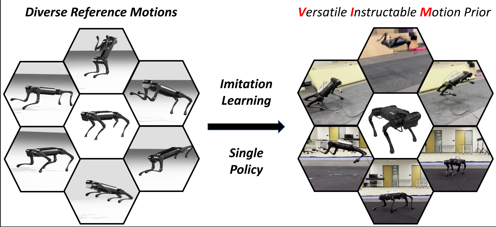

|
Jianhan Ma I'm currently a second year M.S. student at the ECE department of UC San Diego, working with Prof. Xiaolong Wang on robotic learning techniques deployed on quadruped robots. Prior to joining UCSD, I worked on computer vision in medical image processing under the supervison of Prof. Zhuozhu Liu at Zhejiang University. |
{kind=link}
ResearchI'm interested in reinforcement learning, computer vision, and advanced locomotion. |
|  |
Generalized Animal Imitator: Agile Locomotion with Versatile Motion Prior
Ruihan Yang*, Zhuoqun Chen*, Jianhan Ma*, Chongyi Zheng*, Yiyu Chen, Quan Nguyen, Xiaolong Wang In submission to ICRA, 2024 project page / video / arXiv This paper introduces the Versatile Instructable Motion prior (VIM) – a Reinforcement Learning framework designed to incorporate a range of agile locomotion tasks suitable for advanced robotic applications. Our framework enables legged robots to learn diverse agile low-level skills by imitating animal motions and manually designed motions with Functionality reward and Stylization reward. |
Miscellanea |

|
Graduate Student Instructor, CS188 Spring 2011
Graduate Student Instructor, CS188 Fall 2010 Figures, "Artificial Intelligence: A Modern Approach", 3rd Edition |
|
This website template is borrowed from John Barron. |